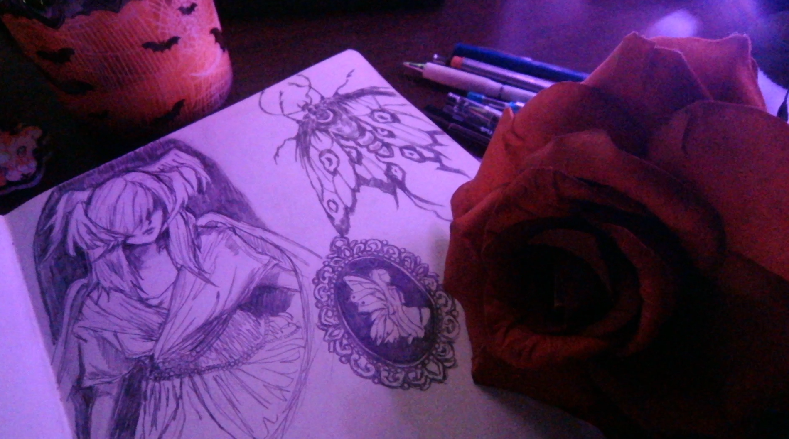

Welcome to my portfolio!
Hi, Im Arianna! I'm a Media Arts and Sciences student at ASU with an interest in web development, digital design, and interactive media. This portfolio showcases some of the projects and skills I have developed throughout my coursework.
I enjoy exploring the intersection of technology and creativity, and I'm always looking ways to combine creativity with technology to create digital experiences. As I continue my education, I aim to further develop my skills in web design, programming, and the field of digital media.
Outside of digital work, I also enjoy drawing and creating art by hand. I've always enjoyed exploring different ways to be creative, and that interest influences the way I approach design, storytelling, and the projects I create.

Explore My Work
Feel free to explore my projects, learn more about me, and check out my resume, visit my projects to see examples of my coursework and creative projects or learn more about my background and interests on the About page.
I hope you enjoy exploring my portfolio and learning more about my work! I look forward to adding more work and projects to my portfolio as I continue to develop my skills and gain more experience.